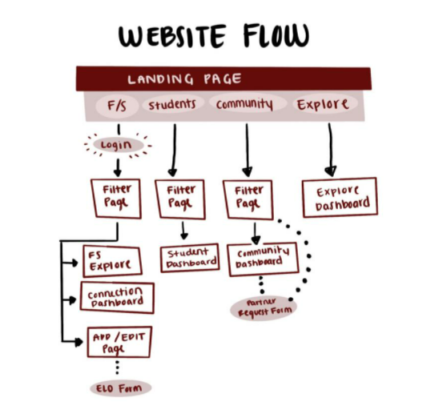

This is a flowchart based on what type of user is interacting with the product.
All users will be able to access the landing page through the Department of Community Affairs and select the appropriate link based on whether they are a faculty/staff member, student, community member, or someone else looking to explore UA's current projects.
A faculty or staff member will be directed to the myBama login. They will then be able to select various areas of interest to them which will be reflected on the faculty/staff explore page. They may also browse the connection dashboard which shows potential community partnership opportunities. To add or edit a project which they own they will be directed to an ELO form with standardized dropdowns and data input.
A student will be directed to the myBama login and then be able to select areas of interest to them which will then be reflected on the student dashboard, where they can browse potential ELOs they would like to participate in.
A community member seeking partnership with faculty/staff will also be able to select their corresponding areas of interest on the filter page which will be reflected on the community dashboard or submit a partner request form to reach out to a particular faculty/staff member which fits their project needs.
Additional users such as prospective students, faculty and staff from other universities, donors, etc. will be able to view all of UAs ongoing EOL opportunities on the explore dashboard.